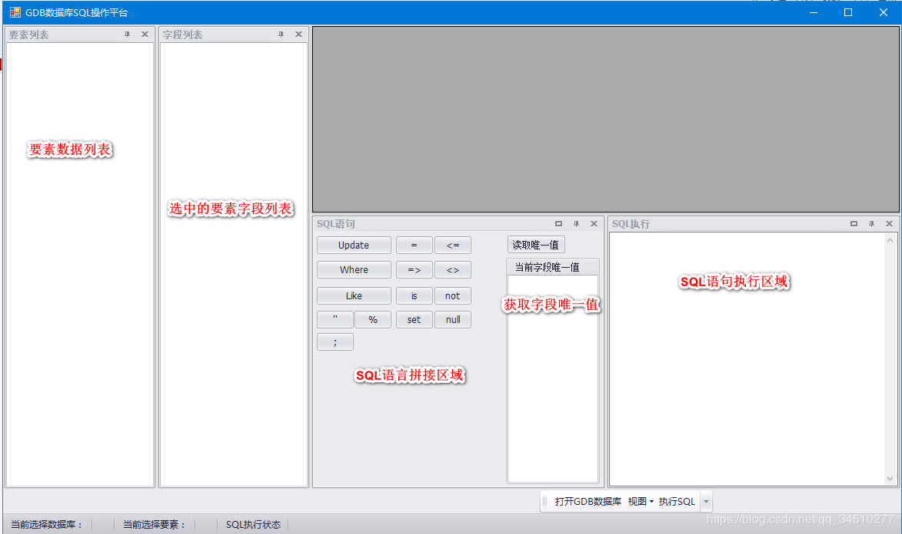

原文出处:本文由博客园博主wyxbky提供。
原文连接:https://www.cnblogs.com/ArcGISEngine201907121013/p/11210257.html
原文连接:https://www.cnblogs.com/ArcGISEngine201907121013/p/11210257.html
GDB数据库SQL操作平台
开发本软件的初衷：由于计算数据库要素层属性的时候，涉及到要计算多个字段，或者要根据代码计算名称，得一个一个的筛选并计算，过程比较繁琐，于是就想能不能通过像处理SQLServer数据一样的，通过写SQL语句来执行，在此觉得很有必要，于是就开发了本软件，通过SQL语句（可以通过拼接很多SQL语句，一键全部计算完成）来执行更新GDB数据库中的属性（特点：本软件的计算是通过执行SQL语句来更新属性的，所以计算的速度杠杠的！！！）。
本软件基于VS2010+ArcGISEngine 开发，界面如下：

使用步骤：
1、打开GDB数据库

打开GDB数据库后，会在要素列表列出所有要素类

单击要素名称，字段列表列出该要素所有字段，双击要素名称，将要素名称复制到“SQL执行”窗口

同样的道理，双击字段名称，将字段名称复制到“SQL执行”窗口，下面是拼接好的一句SQL语句，点击执行SQL，将地类代码为'0103'对应的地类名称赋值为'旱地'。

执行完成：

可以大批量的拼接很多SQL一句，执行一键全部计算：


是不是很爽歪歪！！！（执行之前建议备份数据库）
需要的联系我：18798835893